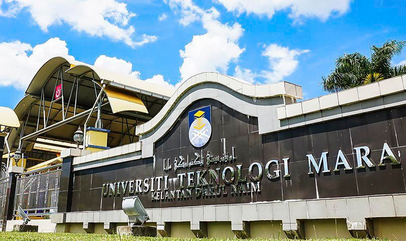

I graduated from Sekolah Agama Tengku Amalin A'ishah Putri, a prestigious institution known for its academic excellence and comprehensive extracurricular programs. Located in Kota Bharu, Kelantan, Sekolah Agama Tengku Amalin A'ishah Putri provided me with a robust educational foundation and a supportive learning environment. Throughout my years there, I actively participated in various clubs and organizations, honing my leadership skills and fostering a strong sense of community engagement. The curriculum at there emphasized critical thinking, creativity, and collaborative learning, preparing me not only academically but also socially for future endeavors. I am proud to have been part of such a vibrant educational community that values both academic achievement and personal growth.
I hold a degree in Information Science (Honours) Information Systems Management from University Teknologi MARA (UiTM) Machang Kelantan. My educational background has provided me with a strong foundation in both the theoretical and practical aspects of web development and design. Throughout my studies, I gained in-depth knowledge of HTML, CSS, C++, and various web development frameworks, which have been instrumental in shaping my technical skills.
My time at UiTM Machang Kelantan was marked by a rigorous curriculum that emphasized the importance of user experience (UX) and user interface (UI) design, as well as the latest industry trends and technologies. The comprehensive program included hands-on projects and real-world applications, allowing me to apply my learning to create functional and aesthetically pleasing websites. This educational experience not only equipped me with the necessary skills to excel in web design but also instilled in me a passion for continuous learning and innovation in the field.
